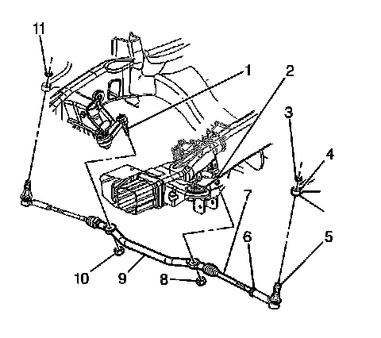
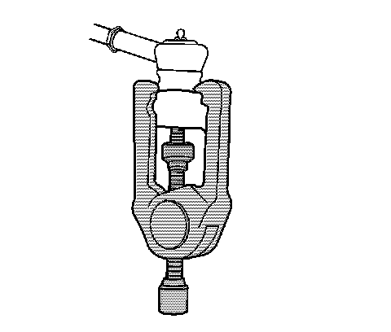
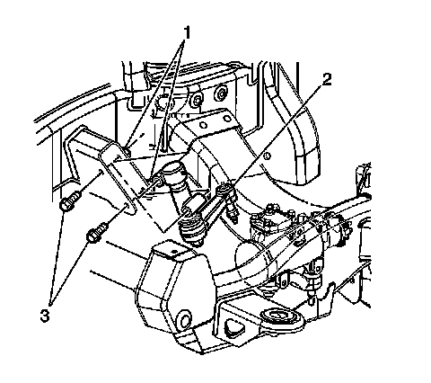

Idler Arm: Service and Repair
Idler Arm Replacement
Tools Required
J 24319-B Universal Steering Linkage Puller
Removal Procedure
Notice: Do not attempt to free the ball stud by using a pickle fork or wedge type tool, because seal or bushing damage could result. Use the proper tool to separate all ball joints.
1. Raise the vehicle. Refer to Lifting and Jacking the Vehicle.

2. Remove the engine protection shield, if equipped.
3. Remove the idler arm ball stud nut (10).
Do not reuse the idler arm ball stud nut.

4. Remove the idler arm from the relay rod using the J 24319-B.

5. Remove the idler arm frame bolts (3) and the nuts (1).
6. Remove the idler arm (2) from the vehicle.
Installation Procedure
1. Position the idler arm (2) on the frame.
Notice: Refer to Fastener Notice.
2. Install the idler arm to frame bolts (3) and nuts (1).
Tighten the nuts to 105 N.m (78 lb ft).
3. Install the idler arm ball stud (1) to relay rod (9).
Ensure the seal is on the stud.
4. Install the new idler arm ball stud prevailing torque nut to the idler arm ball stud.
Tighten the nut to 62 N.m (46 lb ft).
5. Install the engine protection shield, if equipped.
6. Lower the vehicle.
7. Check the wheel alignment. Refer to Measuring Wheel Alignment.